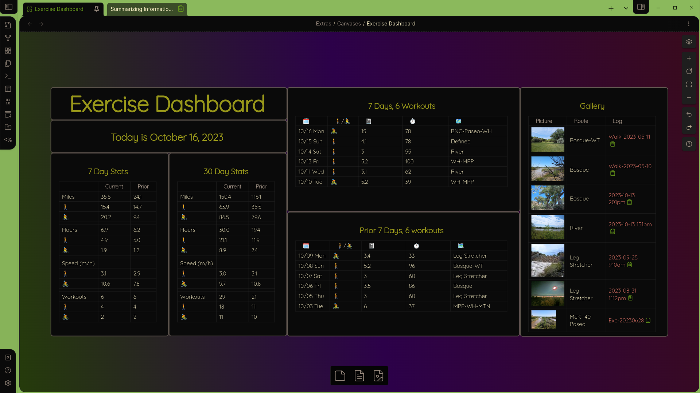
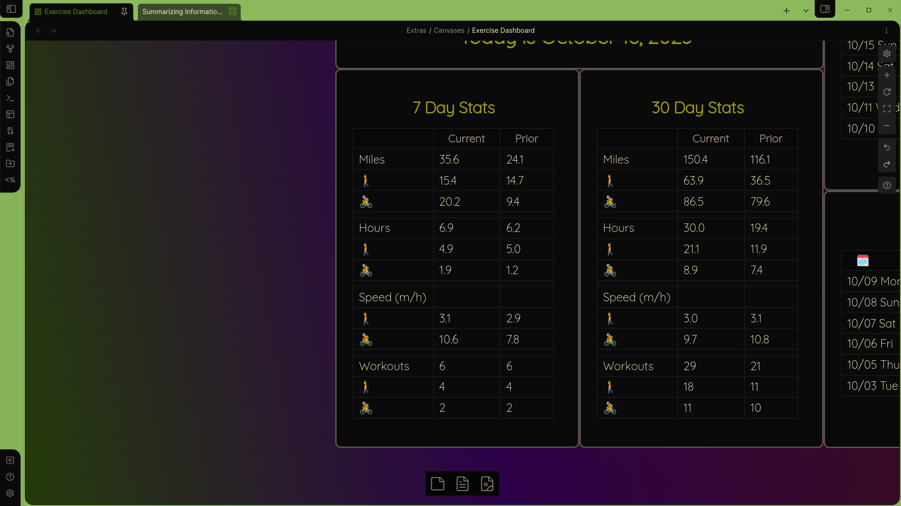

Summarizing Information with DataviewJS

This article follows up on earlier articles in which I showed how to create interactive tables which are automatically updated and can be edited directly in the table. This article will describe how to create summary statistics for data. The statistics on the dashboard update based on the current day.
As you can see, I’ve done a bit of rearranging since the last article to make things even more readable. The statistics tables have been re-sized and reformatted for a cleaner display, and I’ve added more information. There are still some tweaks I want to do, but this is a very useful dashboard.
A quick comment on canvases: since I started working on canvases it’s hard to go back to the 80 characters wide format of a note. Sure, when I’m writing an article or focusing on a bit of code, that format feels very natural. But when doing pretty much anything else, well, it’s just nice to be able to spread out, and not have to open and close files, or page up and down through documents. Using a canvas is like putting all of your current work on your desk, with everything open to the pages you are interested in. In a future article I will show how a dashboard can be used in place of a Daily Note to manage your day.
Here is the table I will show how to create in this article. As before, you can just skip to the bottom and grab the code if you want. This article explains everything rather thoroughly and introduces some general programming concepts. I think that, if you spend a little time with the material you will find that it is not, as they say, rocket science.

That’s 22 numbers to calculate! The process isn’t too complicated, but we need to keep track of a lot of things. To avoid a lot of repetition, we will create some custom functions, and you need to learn how to “push” lists into lists.
Let’s start by writing down what we need to do.
- Create the data sets
- Get the logs for current and prior periods
- Separate by activity
- Make a variable and calculate each statistic for current and prior periods
- distance for each activity and total (6 total)
- duration for each activity and total (6 total)
- speed for each activity (4 total)
- counts for each activity (6 total)
- Generate the output
- Create the tables’ headers
- Generate the table rows
- Create headers for the with workout totals
- Display the tables with header elements
The data
First, let’s grab the data for the current and prior seven day periods. In the last article I showed how to get the current period. Did you figure out how to get the prior period? One way is to first take the data from the last 14 days, and then remove the most recent 7 days. So we’ll do it like this:
const priorPages = dv.pages()
.where(b => b.type == "log")
.where(b => b.ActivityDate >= moment().subtract(14, "days"))
.where(b => b.ActivityDate <= moment().subtract(7, "days"))
Create the currentPages data set as well. Then each needs to be separated by walking and biking. You can do it like this:
const currentWalkPages = currentPages
.where(b => b.Activity == "🚶")Go ahead and create the rest of the datasets. You need currentBikePages, priorWalkPages and priorBikePages.
Calculations
Good programming involves avoiding repetitive tasks. Whenever you need to do the same thing more than once or twice, the standard practice is to make a function.
Functions
Here is an example of a function we can use. It is arguably overkill to make this a function, but it will provide a good example. A function starts with the keyword function followed by the name you want to use. The name is followed by parentheses which are required, but may be empty. They are used to pass arguments to the function. The function itself is then placed in curly braces. After the function does it’s work, it needs to return some value.
I have a bunch of numbers in minutes which I want to convert to hours. This is just a matter of dividing by 60 of course, but I also want to round off to one decimal. There is a function toFixed() which can be used on strings. It takes one argument, the number of decimal places you want to round it to. This is the function:
function toHours (time) {
return (time / 60).toFixed(1)
}and I use it like this.
const totalCurrentTime = toHours( sumStat("duration", pages) )Of course, I haven’t created sumStat() yet. To calculate the sum there is a JavaScript function called reduce(). It is used like this:
reduce(
(sum, b) => sum + b.Distance,
0
)The syntax looks a little complicated, but it’s not so bad if you break it down. reduce() takes two arguments. The first argument is (sum, b) => sum + b.Distance, which is itself a function with two arguments. The second argument here is our old friend b. In this case, we also need temporary variable called an accumulator. The name of this variable is arbitrary, like b. reduce() will go through each log, adding the value of the Distance field to the accumulator. The second argument to reduce() is just the initial value for the accumulator, which is almost always 0.
Now I can write the function like this
function sumStat (stat, thePages) {
const pageValues = thePages.values
if (stat == "duration") {
return pageValues
.reduce((sum, b) => sum + b.Duration, 0)
}
if (stat == "distance") {
return pageValues
.reduce((sum, b) => sum + b.Distance, 0)
}
}I didn’t want to write two separate functions for calculating the sums, instead I use a conditional if statement, which works as you might expect. Notice a few things about this. First, pageValues just saves us adding .values to each if statement. if statements require a condition in parentheses. It must be something that evaluates to a boolean value (true or false, remember). Then, as usual, the block of code you want to execute must be in curly braces. Finally, you almost always want to return something. Once you hit a return statement, nothing else gets executed in the function.
Maths
Now we can create all of our time and distance variables like this:
const totalCurrentTime = toHours( sumStat( "duration", currentPages ) )
const totalCurrentDistance = sumStat( "distance", currentPages ).toFixed(1)Speed is just distance over time, so.
const currentWalkSpeed = (
totalCurrentWalkDistance / totalCurrentWalkTime
)
.toFixed(1)Notice that I specified to round to one decimal point. To find the total number of workouts it is necessary merely to count the number of pages in each category, since each represents one workout. pages() is a list, or array. Arrays all have an attribute/property called length. So to count all workouts in the last seven days I can just write const currentCount = currentPages.length.
Everything else is just repetition, since we need 22 values at the end of the day. Any repetitive activity cries out for a new function to encapsulate this repetition, but I’ll leave that for another day. (This is called refactoring.)
Generate the output
The tables from the last article used a dv.pages() object for the table rows. This time I need to create each table row myself. Each table row is itself a list. So I need a list of lists. It is easy to do this with the push() command, which just adds an item to a list. The item being added can be anything, including a list. I will build the table rows like this:
let rows = []
rows.push(["Miles", totalCurrentDistance, totalPriorDistance])I have to initialize the variable, because I can’t push anything onto a non-existent list. I used let instead of const. The difference is that a const variable cannot change after it has been created, while one declared with var can. (In older code you will see var instead of let. This still works but let is preferred.)
So all that remains is to push each row of the table into the rows variable, create the headers for the table, and use dv.table() to display it. The final code is at the bottom. I strongly suggest, having reached this point, that you try to do this on your own and don’t simply copy and paste my code.
Final thoughts
If you read through both articles, congratulations. Give yourself a pat on the back. You are doing object-oriented programming in the most widely-used language on the internet. And you have all of the knowledge you need to create rich, useful dashboards.
Happy coding!
/* Create data sets */
const currentPages = dv.pages()
.where(b => b.type == "log")
.where(b => b.ActivityDate >= moment().subtract(7, "days"))
const priorPages = dv.pages()
.where(b => b.type == "log")
.where(b => b.ActivityDate >= moment().subtract(14, "days"))
.where(b => b.ActivityDate <= moment().subtract(7, "days"))
const currentWalkPages = currentPages
.where(b => b.Activity == "🚶")
const currentBikePages = currentPages
.where(b => b.Activity == "🚴")
const priorWalkPages = priorPages
.where(b => b.Activity == "🚶")
const priorBikePages = priorPages
.where(b => b.Activity == "🚴")
/* Function to sum the distances, duration */
function sumStat (stat, thePages) {
const pageValues = thePages.values
if (stat == "duration") {
return pageValues
.reduce((sum, b) => sum + b.Duration, 0)
}
if (stat == "distance") {
return pageValues
.reduce((sum, b) => sum + b.Distance, 0)
}
}
/* Function to convert minutes to hours */
function toHours (time) {
return (time / 60).toFixed(1)
}
/* Calculate the distances (6 values) */
const totalCurrentDistance = sumStat( "distance", currentPages ).toFixed(1)
const totalCurrentWalkDistance = sumStat("distance",currentWalkPages).toFixed(1)
const totalCurrentBikeDistance = sumStat("distance", currentBikePages).toFixed(1)
const totalPriorDistance = sumStat("distance",priorPages).toFixed(1)
const totalPriorWalkDistance = sumStat("distance",priorWalkPages).toFixed(1)
const totalPriorBikeDistance = sumStat("distance",priorBikePages).toFixed(1)
/* Calculate the durations (6 values) */
const totalCurrentTime = toHours( sumStat( "duration", currentPages ) )
const totalCurrentWalkTime = toHours(sumStat("duration",currentWalkPages))
const totalCurrentBikeTime = toHours(sumStat("duration",currentBikePages))
const totalPriorTime = toHours(sumStat("duration",priorPages))
const totalPriorWalkTime = toHours(sumStat("duration",priorWalkPages))
const totalPriorBikeTime = toHours(sumStat("duration",priorBikePages))
/* Calculate the speed (4 values) */
const currentWalkSpeed = (totalCurrentWalkDistance / totalCurrentWalkTime).toFixed(1)
const priorWalkSpeed = (totalPriorWalkDistance / totalPriorWalkTime).toFixed(1)
const currentBikeSpeed = (totalCurrentBikeDistance / totalCurrentBikeTime).toFixed(1)
const priorBikeSpeed = (totalPriorBikeDistance / totalPriorBikeTime).toFixed(1)
/* Count the workouts */
const currentCount = currentPages.length
const priorCount = priorPages.length
const currentBikeCount = currentBikePages.length
const priorBikeCount = priorBikePages.length
const currentWalkCount = currentWalkPages.length
const priorWalkCount = priorWalkPages.length
/* Create an array (list) and add the table rows
The first table displays the distance and duration */
let rows = []
rows.push(["Miles", totalCurrentDistance, totalPriorDistance])
rows.push(["🚶", totalCurrentWalkDistance, totalPriorWalkDistance])
rows.push(["🚴", totalCurrentBikeDistance, totalPriorBikeDistance])
rows.push(["","",""])
rows.push(["Hours", totalCurrentTime, totalPriorTime])
rows.push(["🚶", totalCurrentWalkTime, totalPriorWalkTime])
rows.push(["🚴", totalCurrentBikeTime, totalPriorBikeTime])
rows.push(["","",""])
rows.push(["Speed (m/h)", "", ""])
rows.push(["🚶", currentWalkSpeed, priorWalkSpeed])
rows.push(["🚴", currentBikeSpeed, priorBikeSpeed])
rows.push(["","",""])
rows.push(["Workouts", currentCount, priorCount])
rows.push(["🚶", currentWalkCount, priorWalkCount])
rows.push(["🚴", currentBikeCount, priorBikeCount])
/* Create the table header */
const tableHeader = ["","Current","Prior"]
/* Display the table */
dv.header(3, "7 Day Stats")
dv.table(tableHeader, rows)